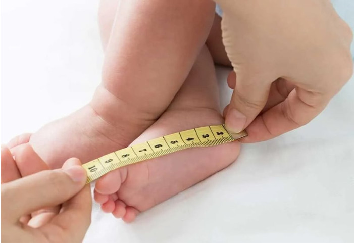
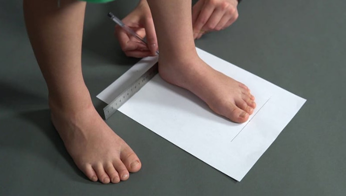
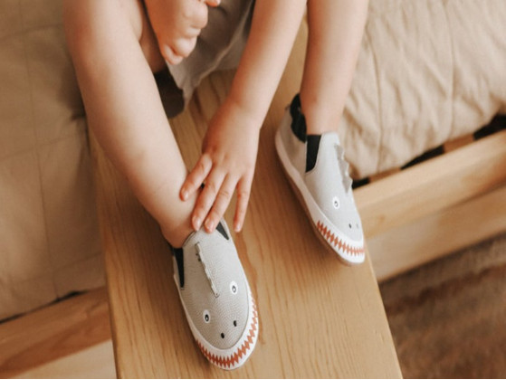
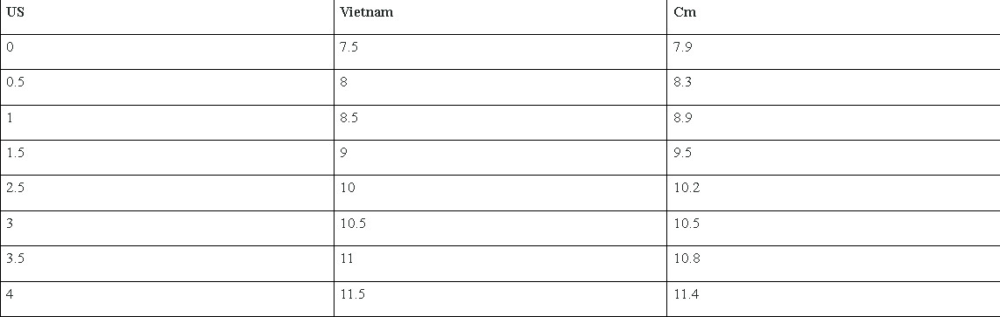
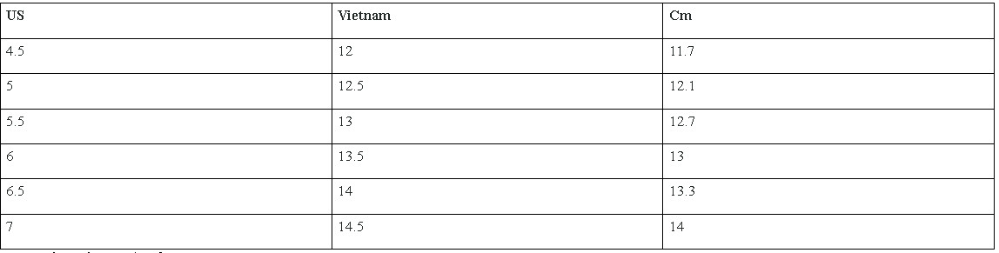
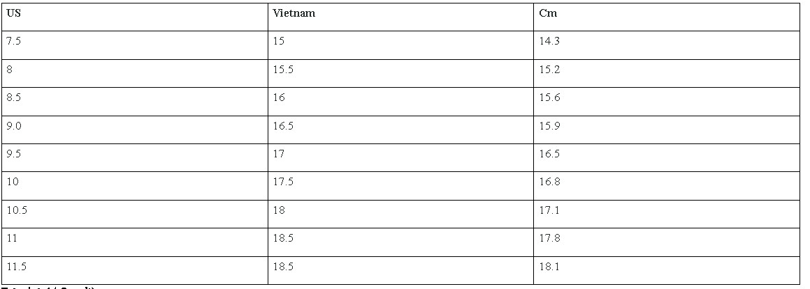

Tư vấn chọn size – Hướng dẫn chọn giày chuẩn nhất cho bạn!
Một trong những món phụ kiện để hỗ trợ bé trong quá trình di chuyển, vận động đó là giày. Việc chọn được size giày phù hợp, vừa vặn với chân, không gây khó chịu là điều không dễ dàng gì, nhất là khi bạn muốn mua hàng online. Vậy nên hãy để bài viết sau đây giúp bạn tìm ra size giày phù hợp với bé nhà mình dựa theo bảng size giày trẻ em đúng chuẩn Việt Nam. Cùng BITI'S theo dõi ngay nhé.
Để có thể chọn đúng kích cỡ giày cho bé nhà, cách tốt nhất là bạn nên đo độ dài của bàn chân trẻ. Nên xác định đúng số đo bàn chân rồi dựa theo đó lựa chọn size giày trẻ em chuẩn thông qua bảng quy đổi. Các để đo bàn chân trẻ em như sau:

Bước 1: Bạn chuẩn bị một số đồ dùng để đo chiều dài bàn chân trẻ. Các dụng cụ sẽ gồm có một tờ A4 màu trắng, bút mực và thước kẻ 35cm
Bước 2: Sau đó bạn đặt tờ giấy xuống sàn, sát với tường, đặt bàn chân bé lên tờ A4 sao cho gót chân tiếp xúc trực tiếp với tường. Lưu ý lúc này chân phải được đặt nằm gọn phía trong tờ giấy
Bước 3: Bạn giữ ổn định chân bé, hãy yêu cầu bé thả lỏng bàn chân để tránh tình trạng sai số. Tiếp theo dùng bút mực vẽ hình chân của bé. Sau khi vẽ xong, bạn có thể cho bé rút chân ra ngoài để tiến hành bước tiếp theo
Bước 4: Từ đỉnh của khung chân vừa vẻ, kẻ một đường thẳng song song với chiều dài của tờ A4 rồi từ điểm dưới cùng kẻ thêm một đường thẳng song song với đường thứ 1. Sau đó, từ hai bên bàn chân kẻ thêm đường thẳng thứ 2 và 3 song song với nhau để tạo thành hình chữ nhật
Bước 5: Đặt thước đo vuông góc với đường thẳng thứ nhất và thứ 2, song song với đường thẳng thứ hai và thứ tư. Kết quả đo được chính là chiều dài chuẩn của bàn chân bé
Bước 6: Bạn dùng kết quả vừa đo ở bước 5 để đối chiếu với bảng quy đổi size giày trẻ em ở shop. Lúc này bạn sẽ xác định được kích cỡ giày phù hợp nhất với bé. Trong trường hợp kết quả không giống với số liệu của bảng size, bạn có thể làm tròn với số lớn gần nhất

Những đứa trẻ mới lớn thường hiếu động và tinh nghịch, chỉ cần xê dịch một chút thôi là kết quả đo sẽ không chính xác. Điều này sẽ khiến cho bạn chọn size giày không đúng, gây khó chịu cho bé. Vì vậy khi đo chân bạn cần lưu ý một số điều như sau:
Sau một ngày hoạt động thì chân của bé lúc nào cũng giãn to hết mức, nên nếu đo vào buổi tối bạn sẽ có được kết quả lớn nhất. Như vậy khi chọn size giày sẽ giúp bé cảm thấy thoải mái hơn khi hoạt động trong ngày
Kích cỡ bàn chân của trẻ nhỏ thường không giống nhau, vì vậy mà bạn cần phải bỏ một chút thời gian để đo cả 2 bàn chân rồi lấy kết quả lớn nhất. Nếu chỉ chọn 1 bên mà bên đó lại có kích thước nhỏ hơn thì khi chọn size giày, chân kia sẽ cảm thấy chật và khó chịu. Việc này vô tình làm ảnh hưởng đến sức khỏe của bé, có thể gây biến dạng xương.

Trẻ em lớn rất nhanh, sau khi đo xong thì bạn nên cộng thêm khoảng 1-3cm vào. Bên cạnh đó những bé có cân nặng lớn hơn thường chân có thể sẽ dày và bè hơn so với các bé khác. Vậy nên bạn cần phải cộng thêm khoảng 3cm vào chiều dài chân đã đo
Nếu lúc đó bạn thấy kết quả bị lẻ thì nên làm tròn khoảng 0,5 để bù trừ cho quá trình vẽ hoặc bé có thể sẽ đi tất nữ
Khác với người lớn size giày bé trai và size giày bé gái ở cùng một độ tuổi không có quá nhiều sự khác biệt. Vì vậy bạn có thể sử dụng bảng size giày trẻ em Việt Nam cho cả bé trai và bé gái Việc lựa chọn đôi giày không phù hợp cho bé có thể gây ra những tổn thương chân không thể phục hồi. Nên bạn cần tham khảo kỹ càng bảng size giày trẻ em dựa vào số liệu dưới đây:
Bảng size giày chuẩn dành cho các bé sở sinh từ 0 đến 12 tháng tuổi

Những bé đang tập đi ở tháng tuổi thứ 10 đến 24 có bảng size giày cụ thể như sau

Đây là bảng size giày áp dụng cho các bé tập đi từ 2 đến 4 tuổi
